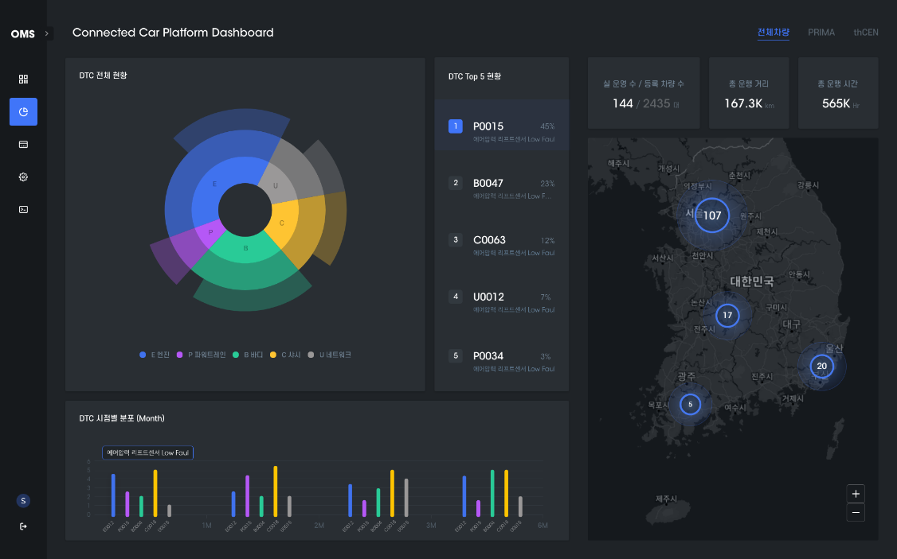
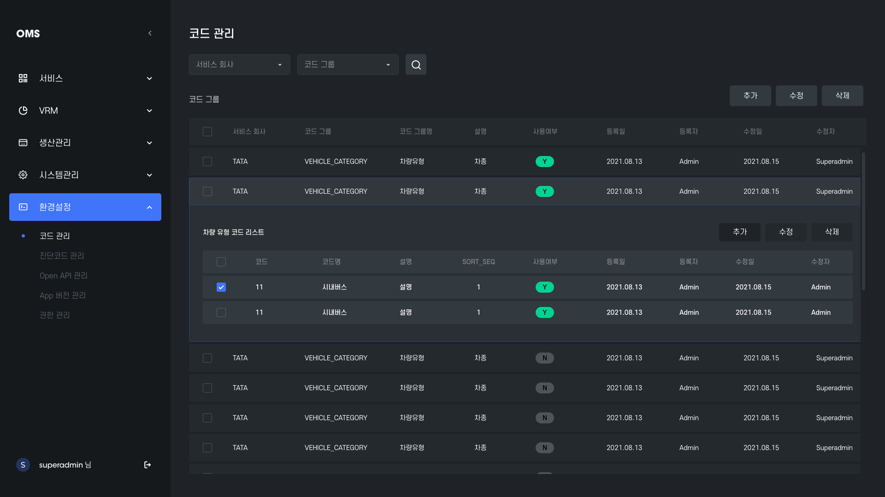
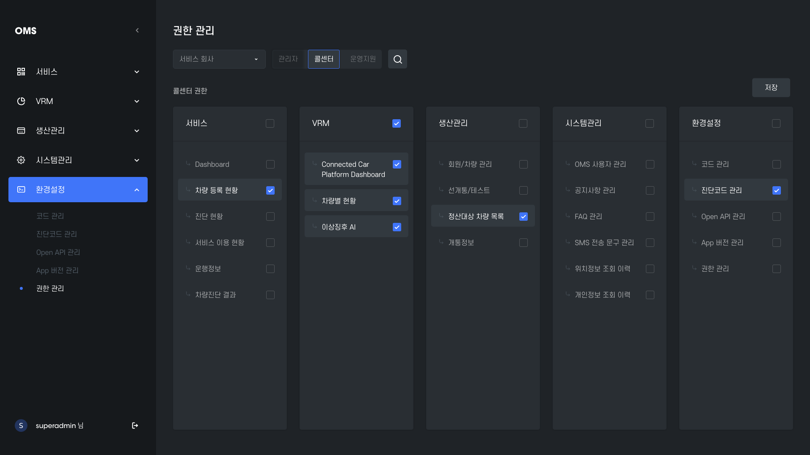
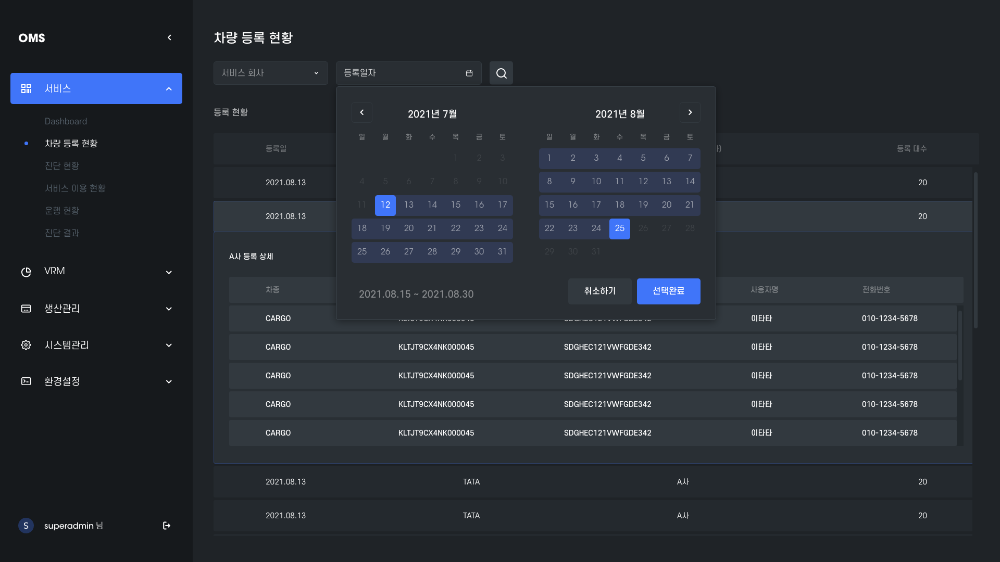
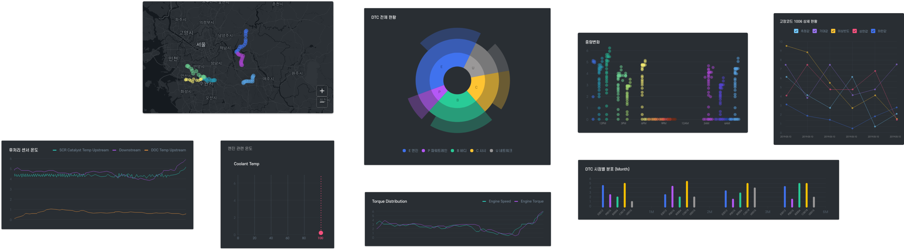
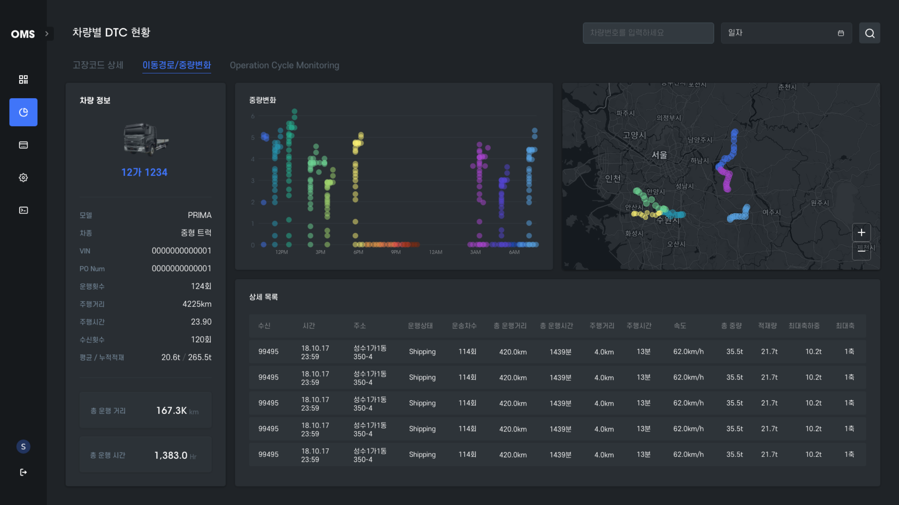
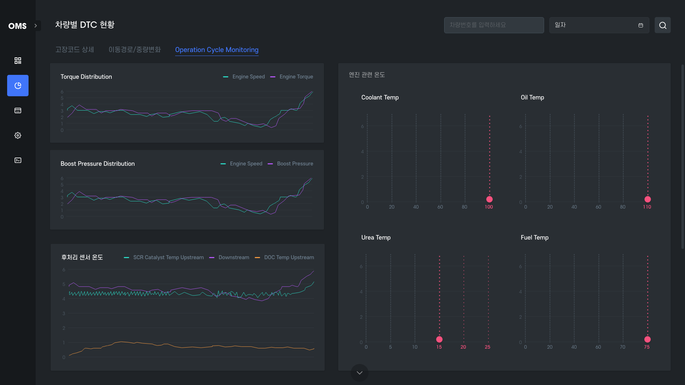
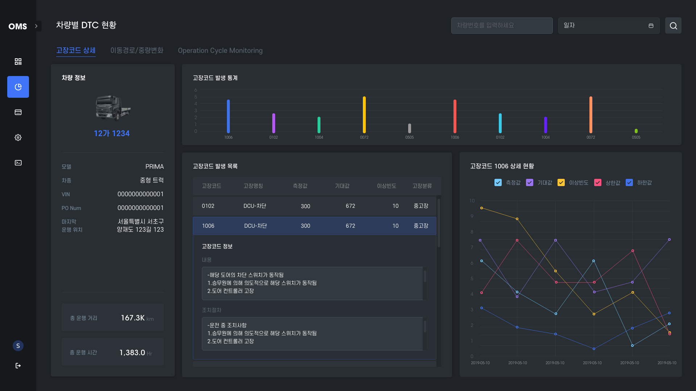
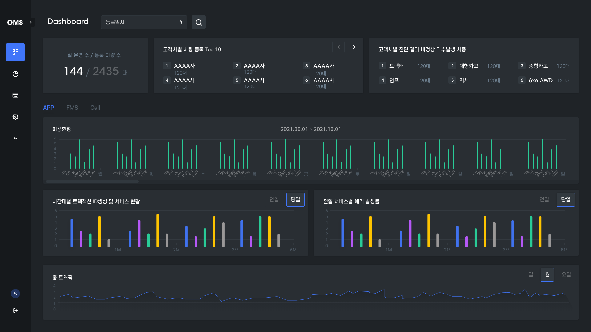

next w
심부전환자 건강지킴이 for patient
About Project 타타대우 OMS는, 대우 화물차량의 주문 및 진단 관리와 커넥티드 카 서비스를 통해 수집되는 정보를 종합적으로 관제 할 수 있는 플랫폼 서비스입니다.
대시보드에서 제공되는 다양하고 복잡한 정보들의 특징을 강조할 수 있도록 시각화하여 정보의 의미를 명확하게 인지하고 쉽게 이해할 수 있는 것을 디자인 목표로 하였습니다.

정보를 쉽게 읽을 수 있도록 가독성이 뛰어난 심플한 고딕 서체를 사용하되 한/영문 각각에 최적화 될 수 있는 서체로 구분하였습니다.
카드 및 기본 요소에 다크 그레이 컬러를 사용하여 톤앤매너를 형성합니다. 정보에는 대비되는 채도 높은 컬러를 사용하여 주목도를 높이고, 중요도를 자연스럽게 습득할 수 있도록 구성하였습니다.





정보의 목적과 특징에 따라 시각화를 적용하여
숨겨진 인사이트를 빠르게 발견할 수 있도록 돕습니다.



next w
심부전환자 건강지킴이 for patient